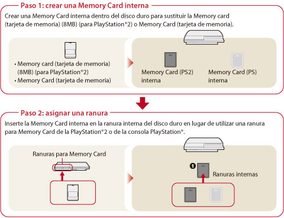
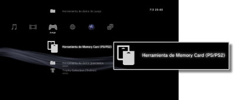

Juego > Jugar a software de formato PlayStation®2 / PlayStation® > Uso de datos guardados
Uso de datos guardados
Los datos guardados para software de formato PlayStation®2 o PlayStation® se guardan en Memory Card internas creadas en el disco duro. Para utilizar Memory Card internas, asígneles ranuras una vez creadas. Los datos se mostrarán en el menú  (Herramienta de Memory Card (PS / PS2)).
(Herramienta de Memory Card (PS / PS2)).
Avisos
- Es posible que algunos títulos de software de formato PlayStation®2 o PlayStation® funcionen de manera diferente en el sistema PS3™ que en los sistemas PlayStation®2 o PlayStation®, o que no funcionen correctamente en el sistema PS3™.
- Además, el software de formato PlayStation®2 no puede reproducirse en algunos sistemas PS3™. Para obtener más información, consulte [Tipos de discos que se pueden reproducir], visite el sitio Web de SCE de su región o revise la documentación suministrada con su sistema PS3™.

Para crear una Memory Card interna
1. |
Seleccione  |
|---|---|
2. |
Seleccione |
 (Juego) del menú principal.
(Juego) del menú principal. (Crear nueva Memory Card interna).
(Crear nueva Memory Card interna).Nota
Los iconos o nombres de las tarjetas de memoria internas se pueden modificar en [Información] en el menú de opciones.
Para asignar una ranura
1. |
Seleccione |
|---|---|
2. |
Seleccione la Memory Card interna que desea utilizar y, a continuación, pulse el botón |
3. |
Seleccione [Asignar ranuras]. |
 .
.Notas
- En función del software, es posible que las ranuras estén asignadas previamente. Para obtener más información, consulte las instrucciones suministradas con el software.
- Puede asignar ranuras durante un juego. Pulse el botón PS del mando inalámbrico y, a continuación, seleccione [Asignar ranuras] en la pantalla que se muestra.